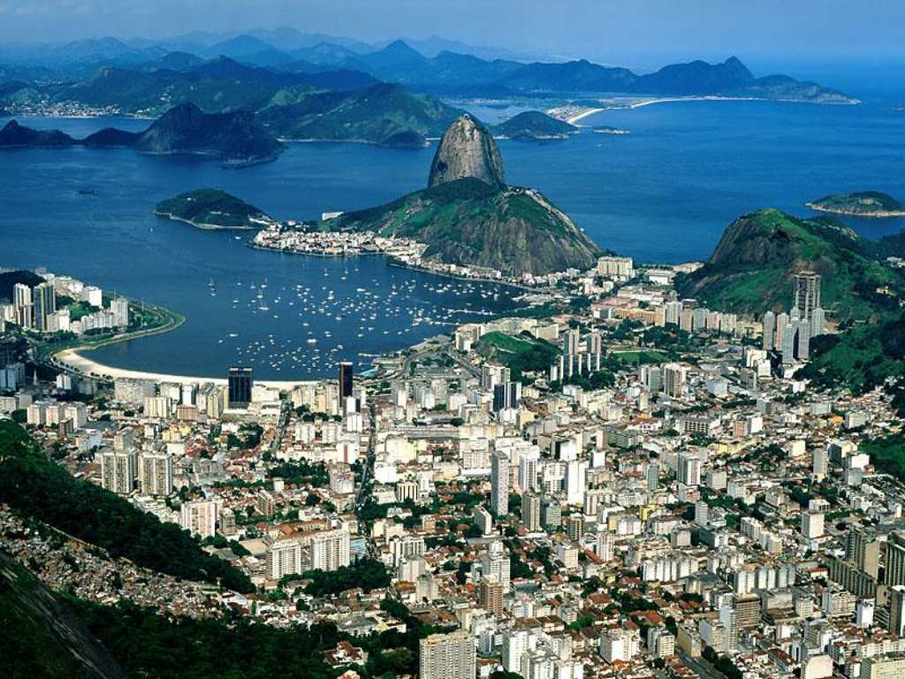
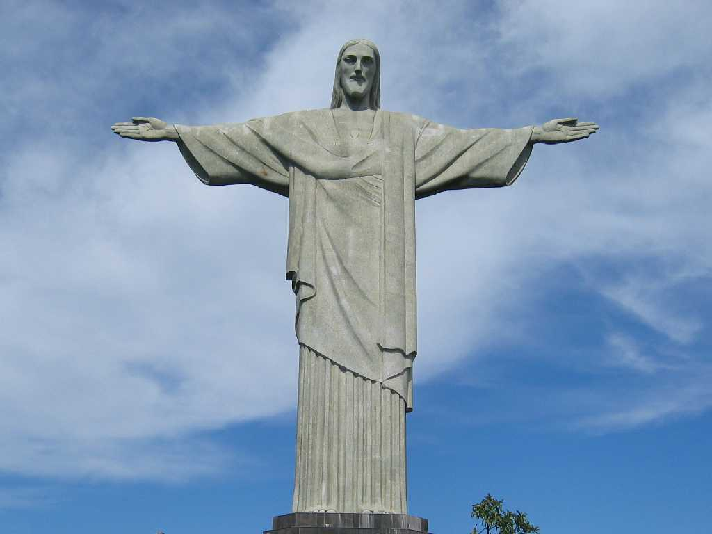
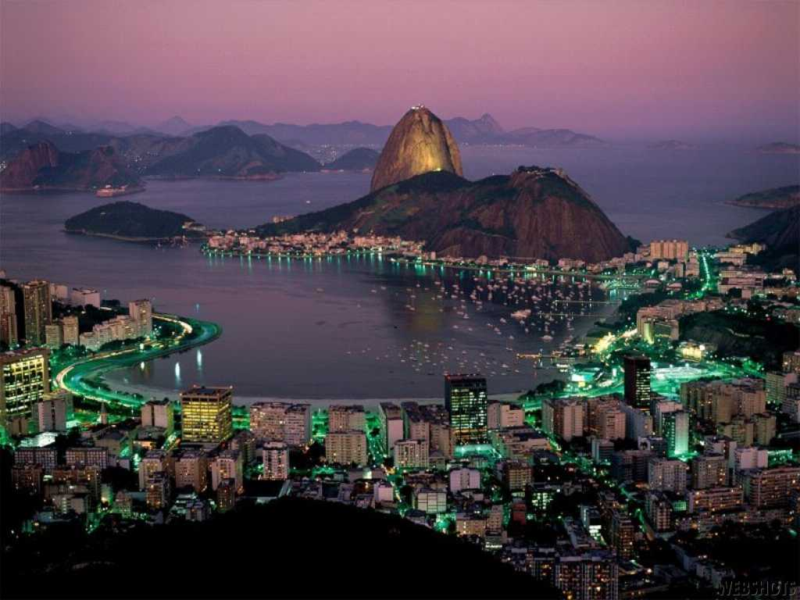
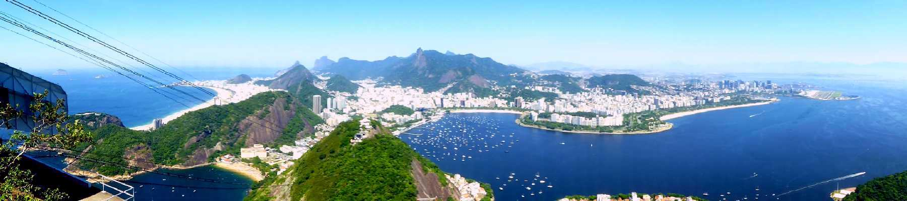
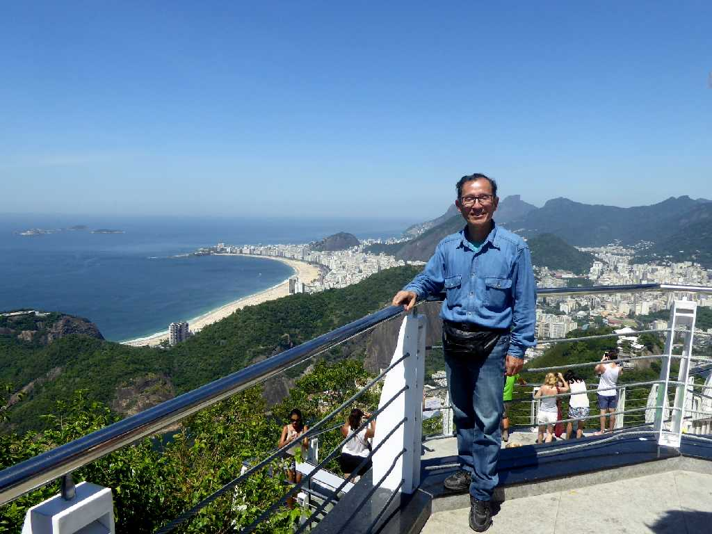

February 1995 Rio De Janeiro from Corcovado
世界三大美港の一つで丘の上から見る港町は美しい Hong Kong Sydney

Christ on Corcovado



Night view from Corcovado

Rio De Janeiro from Sugar Loaf
約２０年ぶりの再訪問で砂糖パンの山から市内を望む

February 9 2016 Rio De Janeiro
地球一周の船旅で南大西洋を一気に５,８９２ｋｍ横断して出港５２日目２５,３０７ｋｍ航行しリオデジャネイロ港に着岸